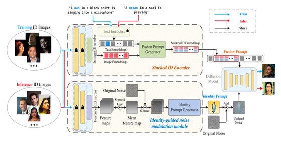

Noematrix
CurrentEmbodied AI Algorithm Intern
2026.10 – present
Embodied AI post-training. Joined on October 26, 2026.
Agentic robotics & embodied reasoning.
I am an incoming graduate student at Fudan TEAI and a computer science undergraduate at China University of Mining and Technology. I am currently an Embodied AI Algorithm Intern at Noematrix in Shanghai, working on embodied AI post-training.
My research explores how vision-language models reason about the physical world and guide robots through long-horizon manipulation, with an interest in spatial intelligence. Longer term, I want to work on RSI (recursive self-improvement) in Embodied AI.
Joined Noematrix as an Embodied AI Algorithm Intern.
Awarded the National Scholarship (2025–2026 academic year).
Admitted to the Institute of Trustworthy Embodied Artificial Intelligence (TEAI), Fudan University, as an incoming graduate student.
Paper RoboStream accepted to ECCV 2026.
Paper CALO accepted to IEEE Transactions on Cloud Computing.
Paper Conscious Gaze accepted to ICME 2026.
Won National First Prize in the "Challenge Cup" Competition.
Awarded Academic Potential 1st Prize at SJTU Summer School.
Embodied AI Algorithm Intern
2026.10 – present
Embodied AI post-training. Joined on October 26, 2026.
Incoming graduate student at TEAI
Admitted 2026.09 · 2027 intake
Institute of Trustworthy Embodied Artificial Intelligence.
B.Eng. in Computer Science and Technology
2023.09 – present
Expected graduation: June 2027.
Research Intern · Shenzhen International Graduate School
2025.12 – 2026.08
Long-horizon manipulation and VLM-based planning. Co-developed RoboStream (ECCV 2026).
Built the RLBench / SIMPLER evaluation pipeline, designed long- and short-horizon task suites, and worked on VLA execution-state memory.
Spatio-temporal reasoning and memory for vision-language models in long-horizon robotic manipulation.
Adaptive attention mechanisms for reducing hallucinations in vision-language models.
Learning resource configurations that adapt to serverless code and changing workloads.
A unified execution state for carrying context across long-horizon VLA queries.

Personalized image generation with consistent identity across outputs.
Diagnoses embodied mind, physical action, and their composition across 30 simulation tasks in three suites: Mind, Act, and Mind2Act. Stage progress and event-level evidence help identify where robotic manipulation fails.
* Equal contribution.
National Scholarship (2025–2026 academic year)
Second Prize, 15th "China Software Cup" Collegiate Software Design Contest, National Finals (Higher Education Group)
National First Prize, "Challenge Cup" Unveiling Competition
15th Place, Tianchi Alibaba Mobile Recommendation Algorithm Challenge
Academic Potential 1st Prize, SJTU Natural Sciences Institute Summer School
Second Prize, RAICOM Jiangsu Division Programming Skills Competition
Bronze Medal, ICPC China Invitational
Second Prize (Provincial), Lanqiao Cup C/C++ Programming
Second Prize (Provincial), Jiangsu Higher Mathematics Competition
Third Prize (National), GPLT Group Programming Ladder Tournament
Three years ago, efficiency was the lens through which I often viewed computer science. Today, I am increasingly interested in how systems learn, reason, and act across unfamiliar situations. Looking ahead, I wonder how experience can become a lasting source of capability—how a system can learn something new without losing what it already knows.
Embodied AI gives this question a physical form. An action changes the world, and the world returns evidence that can refine the next decision. I hope to build systems that can learn from this exchange, allowing experience to shape both what they know and what they do.
Thank you for stopping by.
JavaScript is required for totals
Site-wide totals via Busuanzi